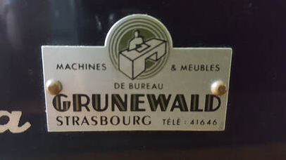

Machine à écrire mécanique
Olympia 8 de 1948 n° 817988

Présentation
La machine est présentée telle que reçue, avant tout nettoyage, démontage.
Caractéristiques
Elle est de marque Olympia, modèle 8, et a été fabriquée en 1948 à Erfurt, une ville située en Allemagne.
Sa date de fabrication n'est pas inscrite, mais peut être connue grace à son numéro de série et le site typewriterdatabase.com

Le numéro de série est gravé en haut à droite du chassis, sur l'arrière.

Comme c'est parfois le cas, le fournisseur/distributeur a riveté sa plaque sur le panneau arrière.
Cette machine pèse 20 kg et est assez imposante, avec son chariot de 18 pouces et sa largeur totale de 72 cm.
His cognitis Gallus ut serpens adpetitus telo vel saxo iamque spes extremas opperiens et succurrens saluti suae quavis ratione colligi omnes iussit armatos et cum starent attoniti, districta dentium acie stridens adeste inquit viri fortes mihi periclitanti vobiscum.
Latius iam disseminata licentia onerosus bonis omnibus Caesar nullum post haec adhibens modum orientis latera cuncta vexabat nec honoratis parcens nec urbium primatibus nec plebeiis.